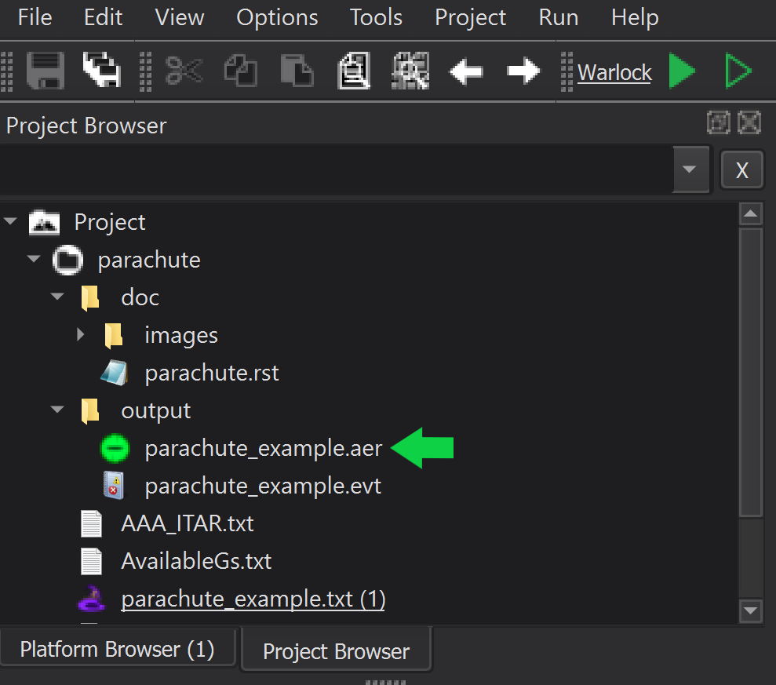
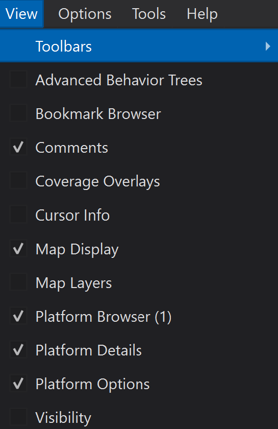
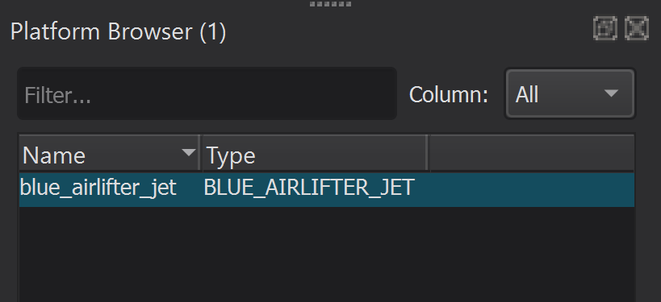
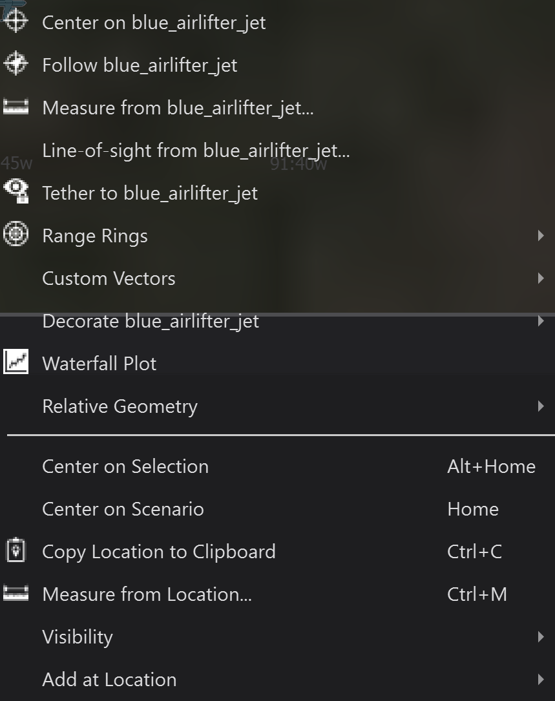

Mystic¶
Mystic is a primary WSF application used to visually observe simulation results and statistics.
Simulation results are recorded when an event_pipe command block is provided within the scenario. The event_pipe blocks create AFSIM Event Recording(.aer) files, which are read and displayed in a geographic context using Mystic.
Quick Start¶
Mystic is directly accessible from the command line. It may also be started from the Mystic desktop shortcut, included with default AFSIM installation, or by double clicking an .aer file from the Wizard Project Browser menu, after a scenario has been simulated in Mission or Warlock.
Launch Mystic¶
Mystic (mystic.exe) may be launched via the desktop shortcut, or from the command line. If launched from the command line, an AFSIM Event Recording file may be provided as an argument.
Note
If Mystic does not execute as expected, ensure that the AFSIM installation path is set in the system environment variables. The Mystic executable (mystic.exe) is located in the ‘/bin’ directory of the AFSIM release file structure.
The Mystic command line syntax is provided below:
>> mystic.exe <event_recording_file>.aer
or
>> mystic.exe
Complete the steps below to open the parachute_example demo recording in Mystic:
Using the command line, navigate to the parachute_example.aer file location and launch Mystic with the parachute_example.aer file as an argument.
Alternatively, launch Mystic from the desktop shortcut and navigate to the scenario from the Mystic Startup window and open the .aer file for the scenario.
Example:
>> cd demos/parachute/output >> mystic.exe parachute_example.aer
The recording is paused when first loaded into Mystic. Click the Resume button (right arrow) from the Time Controller Toolbar to start the recording.
{kind=link}
Launch Mystic From Wizard¶
Complete the steps below to launch the parachute_example simulation event recording file from Wizard:
Launch the parachute_example demo from Wizard.
Double click the generated .aer file found in the Wizard Project Browser to launch Mystic the recording in Mystic.
Note
If no .aer file is visible in the Project Browser, first run the demo using either Warlock or Mission. The recording will be generated during the simulation.
Click the Resume button (right arrow) from the Time Controller Toolbar to start the recording.
|  |
{kind=link}
Closer Look¶
The Menu Toolbar in Mystic provides the following controls for viewing results: Play/Pause/Resume, Reverse, Restart, Set Clock Rate, Jump to Time, Time Slider, and Capture View.
Mystic’s Map Display provides the user the ability to alter the geographic view to enhance visualization during playback. The Map Display may be be adjusted using the following mouse controls:
‘Left-Click + Drag’ - Translates the map with the mouse cursor.
‘Double-Left-Click’ - Zooms the map, centered on the mouse cursor.
‘Mouse-Wheel’ - Zooms the map in and out, centered on the mouse cursor.
‘Middle-Click + Drag’ - Rotates and tilts the view.
{kind=link}
Tip
Familiarity with the Map Display and mouse controls is necessary for the completion of subsequent modules.
Similar to Wizard and Warlock, Mystic provides “dialogue” windows that provide platform specific data and information. The dialogue windows are accessed through the View menu.
{kind=link}
The Platform Browser window lists each platform in the scenario.
The Platform Options window lists the map display options for a platform or a group of platforms, allowing the user to visualize important platform interactions and hide everything else. High level Platform Options consist of: Platform Labels, Range Rings, Vectors, Interaction Lines, History, and Movement.
The Platform Details window displays state information/data for the selected platform.
|  | 
|

|
{kind=link}
A Platform Context Menu is available for each platform, allowing the user to interact with the selected platform in various ways. Right-click on a platform in the Map Display to open its Platform Context Menu.
{kind=link}